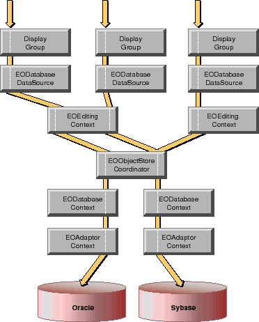

Table of Contents
Table of Contents  Next Section
Table of Contents
Next Section
Table of Contents  Previous Section
Previous Section

Figure 46. Sharing Database Connections
Closing Database Connections
Enterprise Objects Framework doesn't close database connections. If many copies of an application are likely to be running at the same time, you may run out of database connections. You can reduce the likelihood of running out if you close connections when they aren't in use. A good time to close an EODatabaseChannel is after a specified period of inactivity. The following method demonstrates the process:
public void closeChannels() {
int i, contextCount, j, channelCount;
NSArray contexts;
EOObjectStoreCoordinator coordinator;
coordinator =
(EOObjectStoreCoordinator)EOObjectStoreCoordinator.defau
ltCoordinator();
contexts = coordinator.cooperatingObjectStores();
contextCount = contexts.count();
for (i = 0; i < contextCount; i++) {
NSArray channels =
((EODatabaseContext)contexts.objectAtIndex(i)).registere
dChannels();
channelCount = channels.count();
for (j = 0; j < channelCount; j++) {
((EODatabaseChannel)channels.objectAtIndex(j)).adaptorCh
annel().closeChannel();
}
}
}
In Objective-C:
- (void)closeChannelsThe closeChannels method gets the EODatabaseContexts from the default EOObjectStoreCoordinator. Then it gets the EODatabaseChannels registered with each EODatabaseContext. To close the database connection managed by an EODatabaseChannel, closeChannels sends the channel's EOAdaptorChannel a closeChannel message.
{
int i, contextCount, j, channelCount;
NSArray *contexts;
EOObjectStoreCoordinator *coordinator;
coordinator = [EOObjectStoreCoordinator defaultCoordinator];
contexts = [coordinator cooperatingObjectStores];
contextCount = [contexts count];
for (i = 0; i < contextCount; i++) {
NSArray *channels = [(EODatabaseContext *)
[contexts objectAtIndex:i] registeredChannels];
channelCount = [channels count];
for (j = 0; j < channelCount; j++) {
[[(EODatabaseChannel *)
[channels objectAtIndex:j] adaptorChannel]
closeChannel];
}
}
}
The next time a channel is needed, its EODatabaseContext reopens it automatically.
The closeChannels method above assumes that the application only has one EOObjectStoreCoordinator. If your application has multiple coordinators, you would repeat the process for each coordinator. It also assumes that all of the EOCooperatingObjectStores managed by the coordinator are EODatabaseContexts, which is nearly always the case. An EOObjectStoreCoordinator uses only EODatabaseContexts unless you substitute your own EOCooperatingObjectStore subclass. (For more information about EOCooperatingObjectStores, see the chapter "Application Configurations".)
Table of Contents Next Section